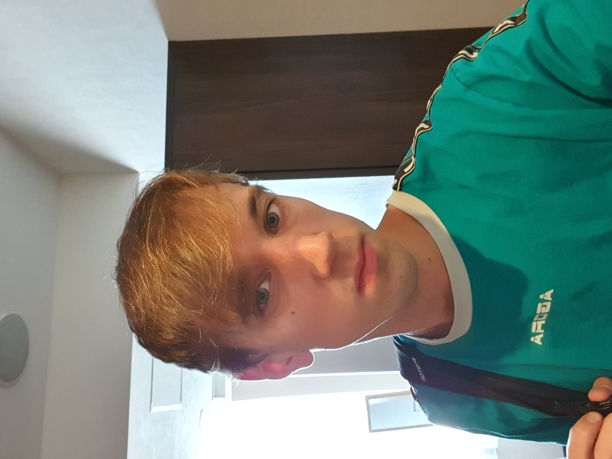

Frans Wikman
Game & Software Developer
I am a developer based in Malmö with experience in game development, game design, programming, software development and digital art.
My work includes fully released indie games, web development projects, game prototypes and artwork created for my games.
© 2026 Frans Wikman